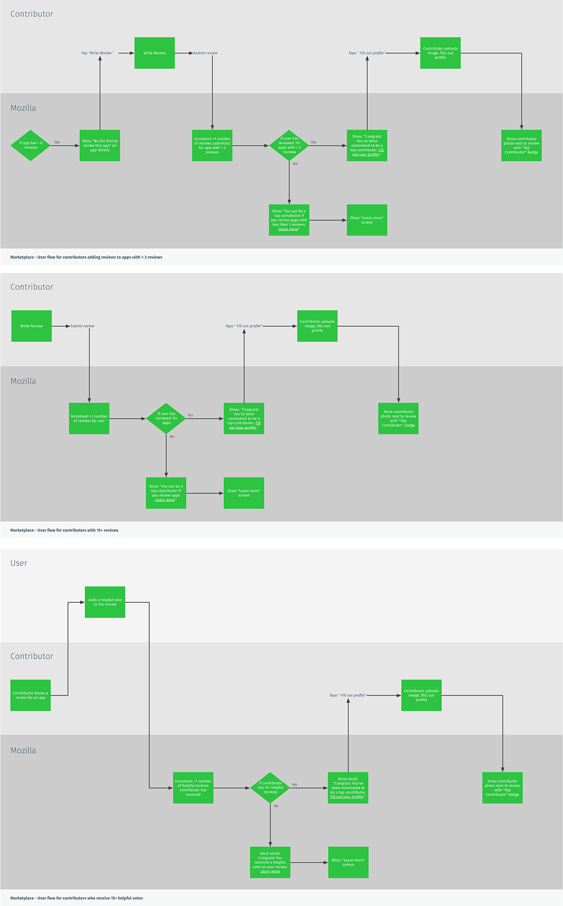

---
layout: MarketplaceUXSpec
multipage: false
---	

<div class="container">
	<h1>Customer Journey Map &rarr; Encourage review of apps with zero review</h1>

	<!-- Pagination. If you have more than one page, set the multipage variable in the Frontmatter to true. Editing the pagination code happens in /_includes/homePagination.html. -->
	{% if page.multipage %}
		{% include homePagination.html %}
	{% endif %}

	<div class="col-sm-12 col-md-12 col-lg-12">
	
	  <h2>What is it?</h2>
    
    <p class="longText">This program is self-explanatory. Having just one well-written review – whether it’s positive or negative – will help other users measure the quality of an app. The focus is not to get the most number of reviews for most apps in the Marketplace, but to get the highest quality and well-written reviews for apps that don’t yet have one.</p>
    
    
    
    <h3><a href="concept-review.html">See concepts</h3>
	  		
	</div>
	
		
